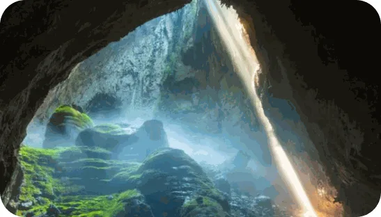
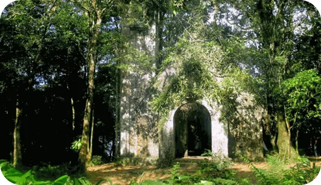
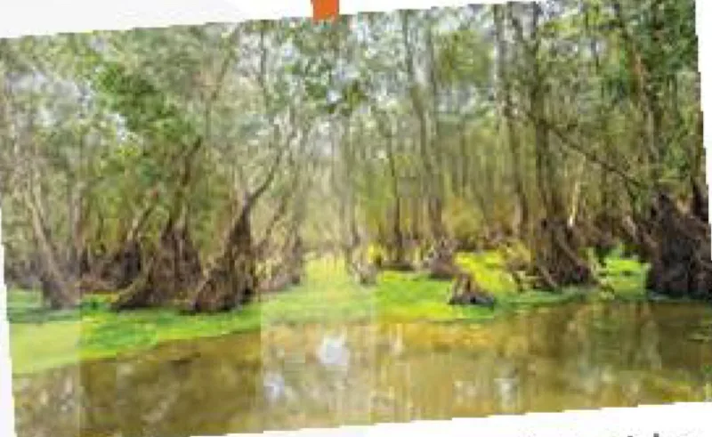
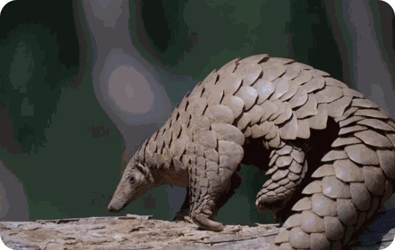
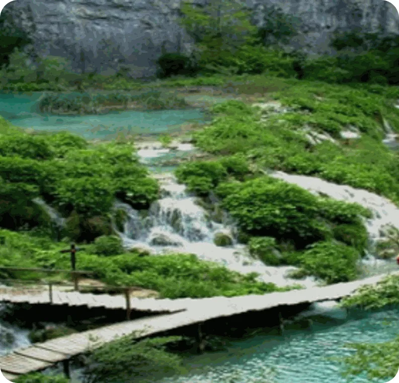
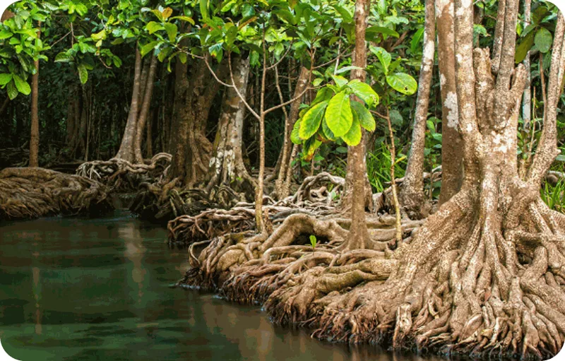
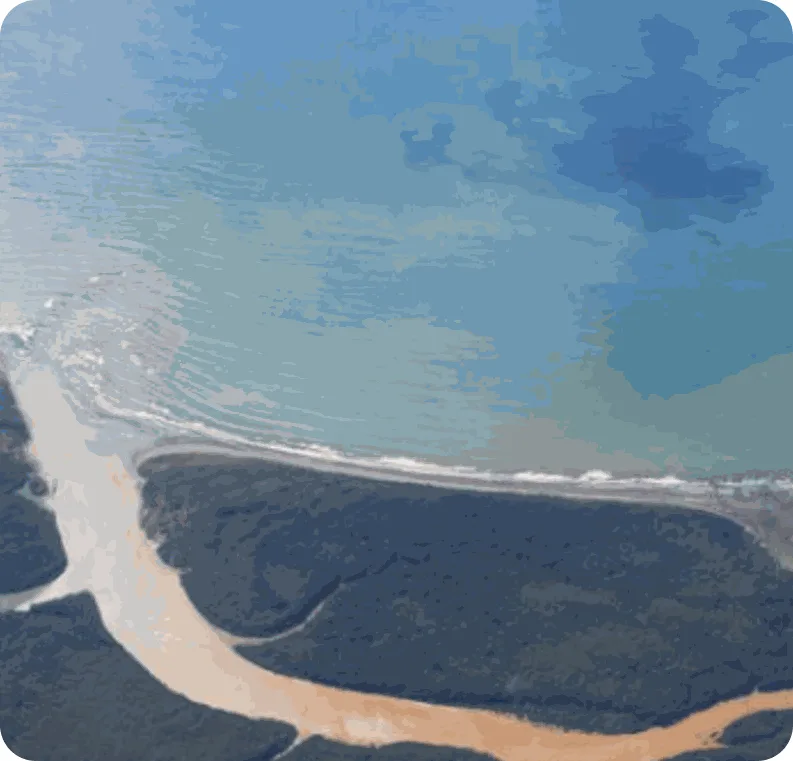
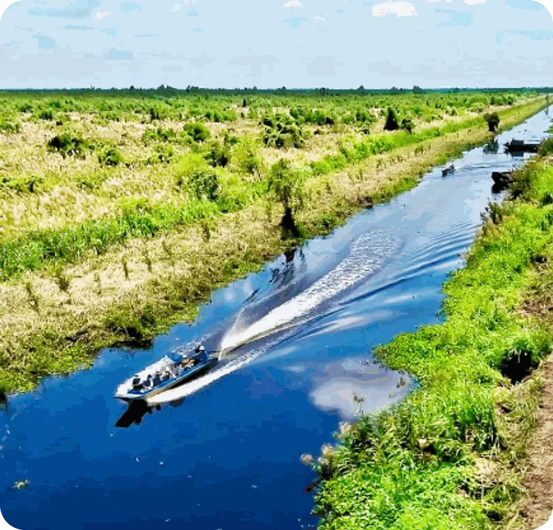

U Minh Thuong — A unique national park
Lesson 3 — Reading
10Five stops in 45 minutes
- 🏞️
Warm-up
Which national park is it?
5 min - 🔤
Pre-reading
Task 1 · 5 key words
9 min - 📖
While-reading
Tasks 2–3
20 min - 💬
Post-reading
Task 4 · protect our parks
8 min - ✅
Wrap-up
Exit ticket
3 min
Warm-up
Which national park is it?
5 minutesWhich national park is it?



Pre-reading
Look closely. Wonder widely.
9 minutesHave you ever been to U Minh Thuong National Park?

Where is it? in Kien Giang Province, in the south of Viet Nam (the Mekong River Delta)
What can/did you see in the park? rare animals and plants · mangrove forests · wetlands · boat trips




While-reading
U Minh Thuong — A unique national park
20 minutesA. ________ · B. ________
A. U Minh Thuong National Park is located in An Bien, An Minh, and Vinh Thuan districts of Kien Giang Province, about 60 km south of Rach Gia city centre. This place is considered one of the most important sites for ecosystem conservation in the Mekong River Delta. It attracts tourists not only with its wild and beautiful scenery, but also with its rare and rich biodiversity.
B. U Minh Thuong National Park covers a large area of freshwater wetlands, including mangrove forests. Its central part is surrounded by waterways with a series of gates, which are used to manage the water level.
C. ________
Home to 226 species of plants, U Minh Thuong National Park is the region with the richest biodiversity in the Mekong River Delta. It used to be one of the largest habitats for water birds in the area, but their home was badly damaged by forest fires in 2002. Now there are about two hundred types of birds in the park, including some unique birds like the great spotted eagle. Thirty-two types of mammals have been found here. Ten of them, including the fishing cat and Sunda pangolin, are on the list of rare and endangered species, native to Viet Nam.
D. ________
The ideal time to explore U Minh Thuong National Park is from August to November, known as the floating water season of the region. Tourists can take a boat to experience nature and wildlife. Visitors can go to Trang Doi, a place where thousands of bats gather, hanging on the trees like huge fruits. Another popular place to visit is Trang Chim, a large area with thousands of colourful birds. So if you love nature, you should definitely go to explore this amazing natural park.
Match the headings
1. Flora and fauna C
2. Best time to visit D
3. Location A
4. Geography B
Complete the sentences (1–3)
1. U Minh Thuong National Park is famous for its rare and rich ________. biodiversity
2. Waterways surround the ________ of the national park. central part
3. It has more than two hundred ________. species of plants
Complete the sentences (4–5)
4. You can find nearly 200 types of birds and 32 ________ there. types of mammals
5. The best time to visit U Minh Thuong National Park is from ________. August to November
Post-reading
Protect our national parks
8 minutesWhy do we need national parks? What should we do to protect them?
🌏 Why do we need them?
habitats for thousands of species
unique geography and natural beauty
preserve biodiversity and natural resources
🛡️ How can we protect them?
conservation campaigns to raise awareness
raise funds to restore damaged sites
fund scientific research · follow park rules
We need national parks…
We need national parks for several reasons. First, they provide habitats for thousands of species of plants and animals. Second, they boast unique geographical features and amazing natural beauty. In addition, national parks play a vital role in preserving biodiversity and natural resources such as minerals, wood and water.
So how can we protect our national parks? First, we can start conservation campaigns to raise awareness. Second, we can raise funds for restoring damaged natural sites. Finally, we can encourage governments to fund scientific research.
Before you leave…
1. Where is U Minh Thuong National Park? in Kien Giang Province, about 60 km south of Rach Gia city centre
2. Name two endangered animals in the park. the fishing cat · the Sunda pangolin
3. When is the best time to visit? from August to November (the floating water season)
Homework
1. Write 70–90 words: How can we protect Viet Nam’s national parks?
2. Do the Reading exercises in the workbook.
3. Prepare for Lesson 4 — Speaking: ways to protect local biodiversity.